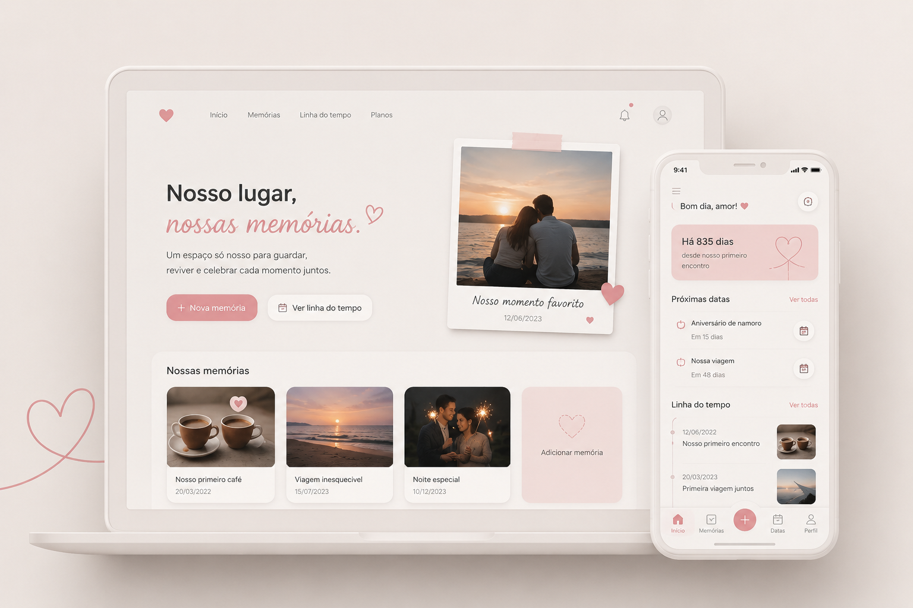

Personal Project · MVPProject portfolio
Projects built with code and purpose
This is a showcase of my development work — experiments, MVPs, and evolving products. Each project documents a stage of my technical journey.
What I’ve built so far
How this portfolio works
Repository structure
The portfolio monorepo contains two main folders: portfolio-website (this showcase) and projects (public versions of projects, with sensitive data removed where applicable for personal projects).
- Scalable
- CSS is organized into global, components, and pages — ready for new cards, detail pages, and future JavaScript integration.
- For personal projects
- Photos, personal content, and credentials are kept only in private versions of the projects, not in portfolio demos.
- Evolving
- Each project documents its status (MVP, prototype, etc.) and receives new updates as the journey progresses.